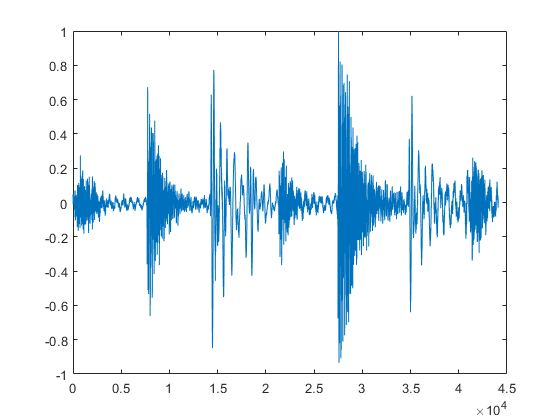
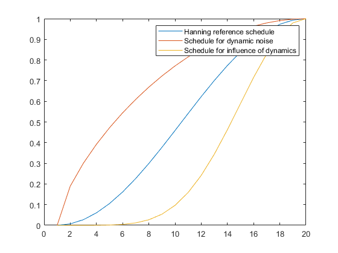
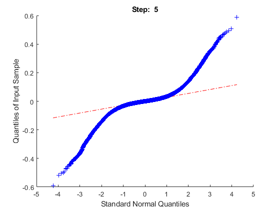
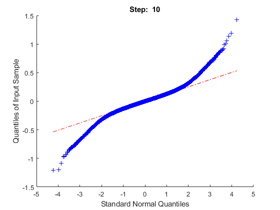
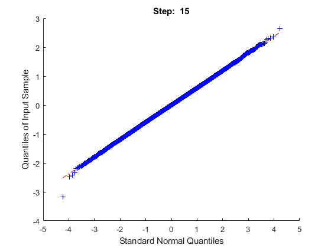
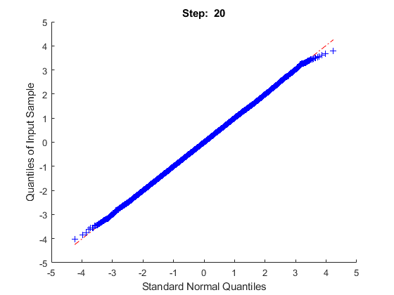
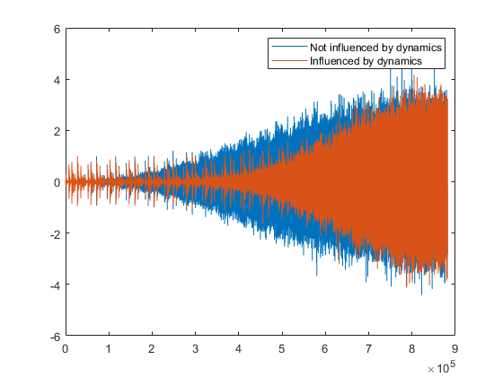

Here's an alternative noisisng scheme I thought might yeild some
interesting results. Here, the signal dynamics are taken into account
and early in the noise schedule, the signal dynamics are used to shape
the added noise signal. As the schedule moves on, the signal dynamic's
influence reduces to nothing, such that T=1 is the same gaussian noise
as in the more convential scheme. This has the result of maintaining a
more consistant signal to noise ratio between quiet and loud parts of
the signal at mid and early points in the schedule, with the hope of
reducing the performance bias towards louder signals. This is an attempt
at addressing the same issue as the compansion method discussed in
lonewater.github.io/Emphasis/. This noise scheme could be a replacement
for, or used in conjunction with compansion.
The hope of using this dynamically influenced noising scheme is that the
model will learn dynamic variation in the signals in middle and later
time steps without worrying about any signals timbre. In middle and
earlier timesteps, once the dynamic profile of the sound has been
established, the timbre of louder and quieter sounds will be determined
simultaniously, preventing louder sounds' timbre being focused on prior
to quieter sounds.
Read in test example drum break as it's an example with good dynamic
variation
x = audioread('James Brown - Funky Drummer.wav');
x = x(:,1);
x = x(1+44100*4:44100*4+44100);
x = x / max(abs(x));
figure
plot(x)

Define number of noise steps to show. Here I'm using the rising edge of
a hanning window as the basis of the noise schedule for ease of
demonstration. This could be replaced by any other schedule.
num_steps = 20;
schedule = hann((num_steps * 2) - 1);
standardNoiseScales = schedule(1:num_steps);
noiseScales = schedule(1:num_steps).^(1/3);
rmsScales = schedule(1:num_steps).^3;
figure
plot(standardNoiseScales)
hold on
plot(noiseScales)
plot(rmsScales)
legend(["Hanning reference schedule" "Schedule for dynamic noise" "Schedule for influence of dynamics"])

Loop through the noise steps.
At each step, split the sample to be noised into 50% overlapping frames.
Loop through the frames, scale a noise sample by the RMS of the window
taking into account the rmsScale.
Overlap add the RMS scaled noise signal. Add the RMS scaled noise signal
to the clean input signal at the level of the noiseScale.
win_size = 2^9;
win = hann(win_size);
for step = 1:num_steps
x_pad = [zeros(win_size/2,1); x; zeros(win_size/2,1)];
frames = buffer(x_pad, win_size, win_size/2, 'nodelay');
noiseScale = noiseScales(step);
standardNoiseScale = standardNoiseScales(step);
rmsScale = rmsScales(step);
scaledNoise = x_pad;
prev = zeros(win_size,1);
for i = 1:size(frames, 2)
mark = (i-1) * (win_size/2);
wn = randn(win_size,1);
wn = wn .* sqrt(win);
Srms = getSrms(frames(:,i));
wn = wn * (Srms * (1-rmsScale) + rmsScale);
scaledNoise(1+mark:mark+win_size) = wn + prev;
prev = [wn(1+end-(win_size/2):end); zeros(win_size/2,1)];
end
During the loop through the noising steps, we can see the none-RMS
influenced refNoise, representing the typical noising scheme, maintains
a normal distribution throughout the steps. Of course, the RMS
influenced steps of scaledNoise have increased kurtosis at earlier time
steps. I'm not sure if this poses a major issue for the network to learn
the noise distribution.
scaledNoise = scaledNoise(1+(win_size/2):size(x,1) + (win_size/2)) * noiseScale;
refNoise = randn(size(scaledNoise,1),1) * standardNoiseScale;
if mod(step, 5) == 0
figure
qqplot(scaledNoise)
title(join(["Step: " string(step)]))
end
y(:,step) = (x * (1-noiseScale)) + scaledNoise;
standard(:,step) = (x * (1-standardNoiseScale)) + refNoise;
   
end
Concating the steps together into one long audio vector, we can see how
the noise accumulates over time. The noise without dynamic variation
(blue) increases as we'd expect over the steps, with quieter parts of
the signal masked earlier in the schedule than louder parts.
In the dynamically influenced signal (orange), we see a longer period of
retained dynamics before turning into simlar noise at the end. The
period in the middle of the shedule for the dynamically added noise sees
loud and quieter sounds approximately equally indistinguishable in terms
of timbre, but are still dynamically present in the signal. The dynamics
decay into noise thereafter. This is easier to hear in examples which
are available here:
https://github.com/lonewater/lonewater.github.io/tree/main/DynamicNoise
combined = zeros(44100*5,1);
for i = 1:num_steps
mark = (i-1) * 44100;
combined(1+mark:mark+44100,1) = y(:,i);
Scombined(1+mark:mark+44100,1) = standard(:,i);
end
figure
plot(Scombined)
hold on
plot(combined)
ylim([-6 6])
legend(["Not influenced by dynamics" "Influenced by dynamics"])
Scombined = LU_normalise(Scombined, -14);
combined = LU_normalise(combined, -14);
audiowrite('html/noDynamicsNoising.wav', Scombined, 44100)
audiowrite('html/dynamicsNoising.wav', combined, 44100)

You can ignore the functions below
function Srms = getSrms(x)
xhat = mean(x);
Srms = sqrt((1/(length(x))) * (sum((x - xhat).^2)));
end
function CF = getCF(x, Srms)
if max(abs(x)) ~= 0 && Srms ~= 0
CF = max(abs(x)) / Srms;
else
CF = 0;
end
end
function x = LU_normalise(x, target)
[LU, ~] = integratedLoudness(x, 44100);
gaindB = target - LU;
gain = 10^(gaindB/20);
x = x.*gain;
end